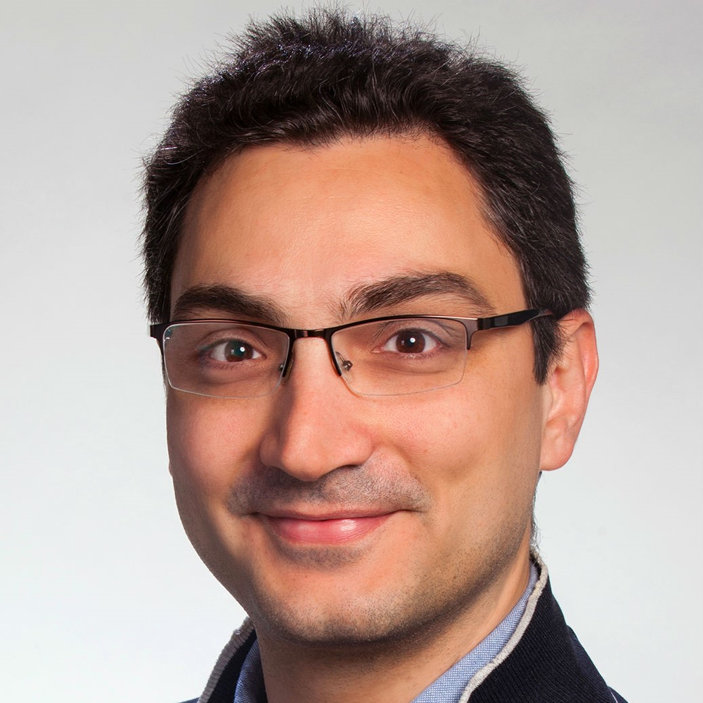

Maria Tsagiopoulou, PhD, was working as a postdoctoral researcher at INAB/CERTH. Her current position is as a postdoctoral researcher at the Centro Nacional de Análisis Genómico (CNAG-CRG).
Konstantinos Kyritsis, PhD, is working as a postdoctoral researcher at the Institute of Applied Biosciences in the Centre for Research and Technology Hellas (INAB/CERTH). He received his BSc in Biology, and his MSc in “Biotechnology and Molecular Diagnostics” from the Aristotle University of Thessaloniki (AUTH). During his studies, he completed a three-month Erasmus+ internship at the Novo Nordisk Foundation Center for Protein Research, University of Copenhagen. He received a scholarship for his doctorate from the Hellenic Foundation for Research and Innovation (HFRI) in 2017, and completed his thesis, entitled “Systematic Analysis of the Expression of Ribosomal Protein Genes”, at the School of Pharmacy AUTH, in 2021. His research interests are currently focused on studying molecular mechanisms and unveiling patterns of functional significance by applying methods of statistical analysis as well as machine learning algorithms to Next-generation sequencing (NGS) data. Furthermore, his interests include developing bioinformatic tools and pipelines for integrating and visualizing heterogenous bio-data.
Nikos Pechlivanis works as a Bioinformatics engineer at the Institute of Applied Biosciences in the Centre for Research and Technology Hellas. He holds an engineering diploma of Electrical and Computer Engineering from the Aristotle University of Thessaloniki (AUTH) where he completed his thesis entitle “Genomic data integration for facilitating machine learning applications”. Currently he is pursuing a PhD in the field of Computation Biology and Bioinformatics under the supervision of Dr. Fotis Psomopoulos. His research focuses on studying machine learning algorithms and computational techniques with respect to their corresponding applications on genomic and meta-genomic data. In addition to his research, Nikolas supports open source/science principles, in support of reusability and accessibility of scientific results. Moreover, he is interested in web development mostly working on server-side scripting by applying data wrangling and analysis techniques.

Dr Fotis Psomopoulos is a Senior Researcher (Associate Professor level) at the Institute of Applied Biosciences (INAB), at the Centre for Research and Technology Hellas (CERTH), in Thessaloniki Greece. His research interests lie at the intersection of Bioinformatics and Machine Learning, primarily working on the design and implementation of data mining algorithms for knowledge extraction from large datasets in Life Sciences. In this context, he was selected to be an EGI Champion on Life Sciences in 2013, an RDA-EU Ambassador for Bioinformatics in 2019, and he is currently co-leading the ELIXIR Machine Learning Focus Group. In addition to his research activities, he is particularly active in training efforts and initiatives (such as the Carpentries and GOBLET). He is the Training Coordinator of ELIXIR-GR, a member of the ELIXIR Training Platform Executive Committee, and a member of the EOSC Association Research Careers, Recognition and Credit Task Force. Finally, he is a strong advocate of FAIR and Open Science; as applied in research software and machine learning in particular. He is a co-author of the Open Science Training Handbook and the Greek National Plan for Open Science, and is leading the ELIXIR Software Best Practices group, with a notable outcome the ELIXIR Software Management Plan, and the RDA FAIR for Machine Learning Interest Group.